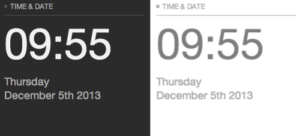
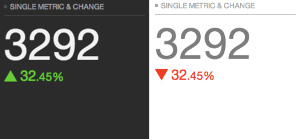
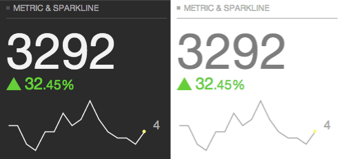
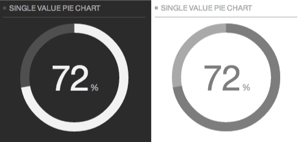
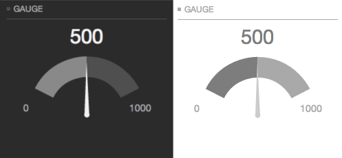
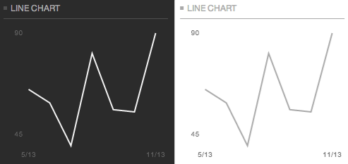
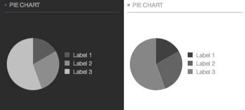
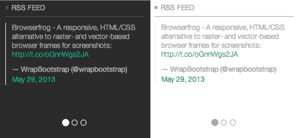
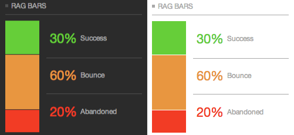
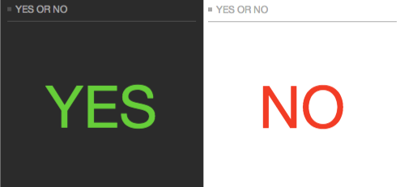

Controlfrog documentation
Everything you need to know... if there is something missing, drop an email to froghelp@bengoodyear.com.
Changing the theme style
There are two theme styles, black and white.
To change the style between the two you must alter two things in the header of the page:
<script> var themeColour = 'black'; </script> <script src="../../js/controlfrog.js"></script> </head> <body class="black">
Metric character length
The large metrics have been designed to fit best with four characters.
If you have metrics longer than this there is a JS function which attempts to trim them down to 4.
Example usage:
var bigNumber = 3295432; var smallNumber = prettyNumbers(bigNumber); // returns smallNumber as '3.3M'
Modules
Controlfrog comes with 11 different modules you can use to show your data. More will be coming in the future. Should have any specific requirements for a new module, or change to an existing one, please send your ideas to froghelp@bengoodyear.com.
Module: Time & Date

Displays the current time and date in either 12hr or 24hr format. It defaults to 24hr format, to use the 12hr format add the class cf-td-12 to the cf-td div.
<header> <p><span></span>Time & date</p> </header> <div class="content"> <div class="cf-td"> <div class="cf-td-time metric">12:00</div> <div class="cf-td-dd"> <p class="cf-td-day metric-small">Monday</p> <p class="cf-td-date metric-small">1st October, 2013</p> </div> </div> </div>
<header> <p><span></span>Time & date</p> </header> <div class="content"> <div class="cf-td cf-td-12"> <div class="cf-td-time metric">12:00</div> <div class="cf-td-dd"> <p class="cf-td-day metric-small">Monday</p> <p class="cf-td-date metric-small">1st October, 2013</p> </div> </div> </div>
Tests
Module: Single metric & change

Displays a single metric and a value of change, either up or down.
<header> <p><span></span>Single metric & change</p> </header> <div class="content"> <div class="cf-svmc"> <div class="metric">3292</div> <div class="change m-green metric-small"> <div class="arrow-up"></div> <span class="large">32<span class="small">.45%</span></span> </div> </div> </div>
<header> <p><span></span>Single metric & change</p> </header> <div class="content"> <div class="cf-svmc"> <div class="metric">3292</div> <div class="change m-red metric-small"> <div class="arrow-down"></div> <span class="large">32<span class="small">.45%</span></span> </div> </div> </div>
Tests
Module: Single metric & change with sparkline

Displays a single metric, a value of change and a sparkline. Each sparkline must be given a unique ID.
This chart uses the jQuery sparklines plugin, refer there for information on customisation of options if required. The theme sets some default options, but they can be overridden and added to per sparkline.
The data and options for each sparkline are passed in the js.
<header> <p><span></span>Metric & Sparkline</p> </header> <div class="content"> <div class="cf-svmc-sparkline"> <div class="cf-svmc"> <div class="metric">3292</div> <div class="change m-green metric-small"> <div class="arrow-up"></div> <span class="large">32<span class="small">.45%</span></span> </div> </div> <div class="cf-sparkline clearfix"> <div id="spark-1" class="sparkline"></div> <div class="sparkline-value"> <div class="metric-small">0</div> </div> </div> </div> </div>
// Initialise sparklines
/*
* Copy the each() function for each sparkline you have
* e.g. $('#spark-1').each(function(){.....}
*/
$('.sparkline').each(function(){
/*
// Set custom options and merge with default
customSparkOptions = {};
customSparkOptions.minSpotColor = true;
var sparkOptions = cf_defaultSparkOpts;
var sparkOptions = $.extend({}, cf_defaultSparkOpts, customSparkOptions);
*/
// No custom options
var sparkOptions = cf_defaultSparkOpts;
data = [5,5,2,1,4,4,7,5,6,9,6,4,3,3,2,4];
createSparkline($(this), data, sparkOptions);
});
Tests
Module: Single value pie chart / donut

Displays a single value pie or donut chart.
Each chart must have a unique ID. An initial value can be set via a data attribute in the HTML. However, it is also possible to update the chart value via JS.
This chart uses the easy pie chart plugin. A small modification to the plugin was made to update the data attribute when calling the plugins update function. This is needed to correctly redraw the chart to make it responsive.
There is a data-layout attribute which is used to alter the chart display depending on it's location in the layouts.
<header> <p><span></span>Single value pie chart</p> </header> <div class="content cf-svp clearfix" id="svp-1"> <div class="chart" data-percent="72" data-layout="l-6-i"></div> <div class="metrics"> <span class="metric">72</span> <span class="metric-small">%</span> </div> </div>
// Update a single value pie chart
// -- Example of how to update a chart, can be used in other cases than from a button click, for example after you have the data you want for the chart
$('.svp-update').click( function(){
var element = $(this).data('update');
// Call EasyPieChart update function
cf_rSVPs[element].chart.update(12);
// Update the data-percent so it redraws on resize properly
$('#svp-1 .chart').data('percent', 12);
// Update the UI metric
$('.metric', $('#'+element)).html('12');
});
Tests
Module: Gauge

Display a gauge with a needle pointing at a specified number between two bounds.
This chart requires you set three unique id's per chart. One on the container, one for the current value and one for the canvas.
Once the charts are initialised, with default values and options (the default values could be set to 0,0,0), you can update the chart with the correct values you want to use.
This chart uses the gauge.js plugin.
<header> <p><span></span>Gauge</p> </header> <div class="content cf-gauge" id="cf-gauge-1"> <div class="val-current"> <div class="metric" id="cf-gauge-1-m">0</div> </div> <div class="canvas"> <canvas id="cf-gauge-1-g"></canvas> </div> <div class="val-min"> <div class="metric-small">0</div> </div> <div class="val-max"> <div class="metric-small">0</div> </div> </div>
/*
* Set or update a Gauge
* @param gauge string ID of gauge container
* @param opts object JSON object of options
*/
function gaugeUpdate(gauge, opts){
if(opts.minVal){
$('.val-min .metric-small', $('#'+gauge)).html(opts.minVal);
cf_rGs[gauge].minValue = opts.minVal;
}
if(opts.maxVal){
cf_rGs[gauge].maxValue = opts.maxVal;
$('.val-max .metric-small', $('#'+gauge)).html(opts.maxVal);
}
if(opts.newVal){
cf_rGs[gauge].set(parseInt(opts.newVal));
}
}
Tests
Module: Line chart

Displays a line chart.
The chart requires you to set two ID's. An ID on the container and one on the canvas.
This chart uses the Chart.js library. A small modification has been made to the library to add a custom option to line charts which allows you to display only the min and max values on the y axis of a chart. The option is scaleMaxMinLabels.
<header> <p><span></span>Line chart</p> </header> <div class="content cf-line" id="cf-line-5"> <canvas id="cf-line-5-c" width="0" height="0"></canvas> </div>
// Initialise chart
/*
* Copy the each() function for each line chart you have
* e.g. $('#line-1').each(function(){.....}
*/
$('.cf-line').each(function(){
// Data for line chart
var ldata = {
labels : ["5/13","","","","","","11/13"],
datasets : [
{
strokeColor : metric,
data : [65,59,40,81,56,55,90]
}
]
}
var $container = $(this);
var lId = $container.prop('id');
// Store chart information
cf_rLs[lId] = {};
cf_rLs[lId].data = ldata;
/*
// Set options per chart
customOptions = {};
customOptions.scaleMaxMinLabels = false;
cf_rLs[lId].options = customOptions;
*/
// Create chart
createLineChart($container);
});
Tests
Module: Pie chart

Displays a pie chart with legend.
The chart requires you to set two ID's. An ID on the container and one on the canvas.
This chart uses the Chart.js library. This library does not support pie charts with labels or legends. The legend on these charts are created with a custom function. All you need to do is pass the label name in the dataset.
<header> <p><span></span>Pie chart</p> </header> <div class="content cf-pie" id="cf-pie-1"> <canvas id="cf-pie-1-c" width="0" height="0"></canvas> </div>
// Initialise chart
/*
* Copy the each() function for each line chart you have
* e.g. $('#pie-1').each(function(){.....}
*/
$('.cf-pie').each(function(){
// Data for pie chart
var pdata = [
{
value : 30,
color : pieSegColors[3],
label: 'Label 1'
},
{
value : 50,
color : pieSegColors[2],
label: 'Label 2'
},
{
value: 100,
color: pieSegColors[1],
label: 'Label 3'
}
]
var $container = $(this);
var pId = $container.prop('id');
// Store chart information
cf_rPs[pId] = {};
cf_rPs[pId].data = pdata;
/*
// Set options per chart
customOptions = {};
customOptions.animation = false;
cf_rPs[pId].options = customOptions;
*/
// Create chart
createPieChart($container);
});
Tests
Module: RSS

Displays items in a carousel. This implementation shows a how a Twitter feed might appear.
<div id="cf-rss-1" class="carousel slide" data-ride="carousel"> <div class="carousel-inner"> <div class="item active"> <-- item content --> </div> <div class="item"> <-- item content --> </div> <div class="item"> <-- item content --> </div> </div> <ol class="carousel-indicators"> <li data-target="#cf-rss-1" data-slide-to="0" class="active"></li> <li data-target="#cf-rss-1" data-slide-to="1"></li> <li data-target="#cf-rss-1" data-slide-to="2"></li> </ol> </div> </div>
Tests
Module: Funnel chart

Displays a funnel of 5 steps with corresponding value and label. Steps 2 through 5 are a percentage value of step 1.
However, the funnel chart can be configured with any number of steps. The layout can be switched to show the bars on the right as well as the left.
The Funnel Chart module is custom built for Controlfrog.
<header> <p><span></span>Funnel Chart</p> </header> <div class="content"> <div id="cf-funnel-1" class="cf-funnel"></div> </div>
/*
* Copy the each() function for each Funnel chart you have
* e.g. $('#cf-funnel-1').each(function(){.....}
*/
$('.cf-funnel').each(function(){
// Dummy data for Funnel chart
funData = [3000,1500,500,250,10];
funLabels = ['Visits','Cart','Checkout','Purchase','Refund'];
funOptions = {barOpacity:true, layout:'right'};
cf_rFunnels[$(this).prop('id')] = new FunnelChart($(this).prop('id'), funData, funLabels, funOptions);
});
- layout
- String e.g. right. Default layout is funnel on the left.
- barOpacity
- Boolean true or false
Pass the option as true if you want the bar background color to decrease in opacity from step 1. - metricOpacity
- Boolean true or false
Pass the option as true if you want the metric color to decrease in opacity from step 1. - customColors
-
Array of hex codes e.g. ['#1ccc22','#f13d19','#f25e02','#1182f0']
You can pass a single colour which is used for all bars, or one per bar.
Funnel charts can easily be updated after creation.
An array of updated values is passed to the funnel chart instance:
newData = [null,1200,490,200,0]; cf_rFunnels['cf-funnel-1'].update(newData);
If a value has not changed, pass null.
Tests
Module: R.A.G Bars

Displays a chart with three coloured bars, Red, Amber and Green along with a corresponding value and label.
However, it can also be configured to display more or less than three items, with custom colours or no bar at all.
The R.A.G module is custom built for Controlfrog.
<header> <p><span></span>RAG Bars</p> </header> <div class="content"> <div id="cf-rag-1" class="cf-rag"></div> </div>
/*
* Copy the each() function for each R.A.G chart you have
* e.g. $('#cf-rag-1').each(function(){.....}
*/
$('.cf-rag').each(function(){
// Dummy data for RAG
ragData = [60,30,10];
ragLabels = ['Success','Bounce','Abandoned'];
ragOpts = {postfix:'%'}
cf_rRags[$(this).prop('id')] = new RagChart($(this).prop('id'), ragData, ragLabels, ragOpts);
});
- figsOnly
- Boolean true or false
Pass the option as true if you want to hide the bars. - postfix
- String e.g. %
Keep postfix size to a minimum, 1 or 2 characters max. - customColor
-
Array of hex codes e.g. ['#1ccc22','#f13d19','#f25e02','#1182f0']
If not enough colours are passed, a default colour will be used. - rgaLength
- Integer e.g. 4
If you want to display less than or more than 3 items you must pass the desired amount using this option.
R.A.G charts can easily be updated after creation.
An array of updated values is passed to the R.A.G chart instance:
newData = [60,null,20]; cf_rRags['cf-rag-1'].update(newData);
If a value has not changed, pass null.
Tests
Module: Yes / No

Displays either a big 'Yes' or a big 'No'.
<header> <p><span></span>Yes or no</p> </header> <div class="content"> <div class="cf-yn yn-y"> <div class="metric m-green"> Yes </div> </div> </div>
<header> <p><span></span>Yes or no</p> </header> <div class="content"> <div class="cf-yn"> <div class="metric m-red"> No </div> </div> </div>